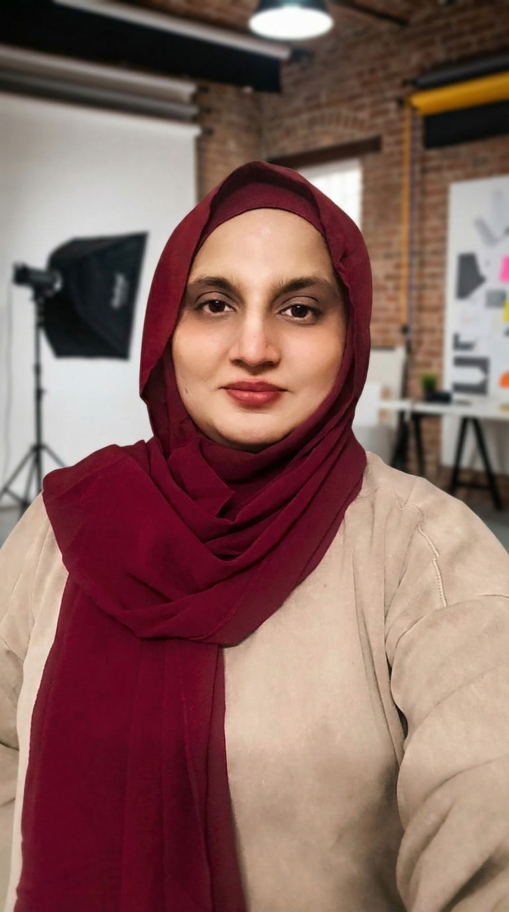

How teachers can use AI without losing the human center.
Future article space for responsible tools, classroom workflows, and learner reflection.
Blog
This page is prepared as the future home for professional articles, reflections, SEO content, workshop notes, and thought leadership.

Editorial Pillars
These categories give the blog a strategy before articles are added, so future posts support your positioning instead of feeling random.
Future article space for responsible tools, classroom workflows, and learner reflection.
Future article space for hands-on learning, coding, robotics, and science programs.
Future article space connecting picture books, imagination, curiosity, and educational design.
Future article space for book planning, character design, KDP, layout, and launch assets.
Future article space for founder thinking, brand platforms, and creative education systems.
Future article space for event recaps, school programs, and conference reflections.